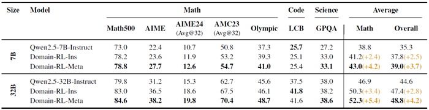

大規模推論モデル（LRM）は、既に長い思考連鎖推論の潜在能力を備えています。これまでの研究では、結果に基づく強化学習（RL）が、自己修正、バックトラッキング、検証といった高度な推論行動（モデルの「アハ体験」と呼ばれる現象）を偶発的に引き起こす可能性があることが示されています。しかし、これらの行動の出現タイミングと一貫性は予測不可能かつ制御不能であり、LRMの推論能力の拡張性と信頼性を制限しています。これらの限界に対処するため、私たちはプロンプトや偶発的な「アハ体験」への依存から脱却します。代わりに、自動生成され自己検証可能なタスクを用いて、モデルを演繹、帰納、アブダクション(仮説形成)という3つのメタ能力に明示的に適合させます。 3段階のパイプライン（個体アライメント、パラメータ空間のマージ、ドメイン固有の強化学習）は、命令調整後のベースラインと比較してパフォーマンスを10%以上向上させます。さらに、アライメントされたチェックポイントからのドメイン固有の強化学習は、数学、コーディング、科学のベンチマーク全体で、元のパフォーマンス上限から平均2%の追加的な向上をもたらし、明示的なメタ能力アライメントがスケーラブルで信頼性の高い推論基盤を提供することを実証しています。コードはこちらで公開されています。(https://github.com/zhiyuanhubj/Meta-Ability-Alignment)
OpenAI-o1 [11]、o3 [17]、DeepSeek-R1 [8]、Grok 3.5 [27]、Gemini 2.5 Pro [3] などの大規模推論モデルは、顕著な能力を示しています。これらのモデルは、複雑なタスクに取り組む際に長い思考連鎖（CoT）[24]応答を生成することに優れており、高度で反射的な推論行動を示します。最近、DeepSeek-R1は、事前学習済みの基本モデルまたは命令調整モデルから始めて、ルールベースの報酬による純粋な強化学習（RL）が、長いCoT推論、自己修正、自己反省、およびその他の高度な行動、総称して「アハ体験」の出現を自発的にもたらすことができることを示しました。 SimpleRL-Zoo [31]、tinyzero [18]、Logic-RL [28]といったオープンソースの研究でも、R1のパフォーマンスと技術的詳細を再現しようと試みており、同様の「アハ体験」が観察されています。自己修正、自己検証、バックトラッキングといったこれらの行動は、モデルが強力な推論能力を内部的に経験していることを示しています。
しかし、創発的な行動のみに頼ることは、本質的に信頼性が低く、制御が困難です。モデルはこれらの高度な推論スキームを一貫して実現できない場合があり、LLMベースの推論の予測可能性とスケーラビリティの両方が制限されます。これを克服するために、我々はLLMを、ピアソンの古典的推論の三要素[19]から導かれた3つのドメイン汎用推論メタ能力（演繹、帰納、およびアブダクション）と明示的に連携させることを提案します。
演繹は、一般的な規則や仮説から特定の結果を推論し（H + R → O）、厳密な予測と検証を可能にします。帰納は、繰り返される共起から規則を抽象化し（H + O → R）、パターンの発見と一般化を促進します。アブダクションは、驚くべき観察に対して最も妥当な説明を推論し（O + R → H）、創造的で逆推論的な思考を促進します。
これらはすべて、仮説の生成、検証、修正のための閉じた推論ループを形成し、科学的手法を反映し、堅牢で解釈可能な推論をサポートします。
これらのメタ能力を運用可能にするために、プログラムによって生成されたインスタンスと自動検証可能性を備えたタスクスイートを構築します。各タスクは、1つのコア推論モードを対象としています。演繹：命題充足可能性タスクは、ルールセットRと候補仮説Hを使用して、すべての前提が観測Oを含意するかどうかをテストします。帰納：マスクされたシーケンス補完では、モデルが部分入力H、Oから潜在ルールRを推論する必要があります。アブダクション：観測された結果OからルールグラフRを介して逆ルールグラフ検索バックチェーンを行い、最小の説明Hを推論します。これらのタスクは、一般的な事前学習コーパスと比較して分布外にある合成分布から構築されており、パフォーマンスの向上が暗記やショートカットの利用ではなく、真のメタ能力の獲得を反映することを保証します。
個々のメタ能力に合わせたモデルは相補的な誤差を生じることが観察されました。それらの予測を集約すると、バニラの指示調整ベースラインと比較して、全体的な精度が10%以上向上します。3つの能力を単一のネットワークに組み込むために、混合タスクコーパスでのトレーニングとパラメータ空間モデルのマージという2つのアプローチを比較しました。パラメータ空間のマージにより、数学、コーディング、科学全体の平均精度が、指示調整ベースラインと比較して、7Bモデルで2%、32Bモデルで4%向上し、マージされたメタ能力の強力な一般化が実証されました。
さらに、メタ能力のアライメントがその後の学習のためのより強固な基盤を提供するかどうかを評価するために、すでにアライメント済みのチェックポイントからドメイン固有の強化学習を再開し、指示調整されたモデルに適用された同じ手順と比較しました。メタ能力チェックポイントから開始することで、達成可能なパフォーマンスの上限が引き上げられます。同一の継続的なドメイン固有の強化学習の後、モデルは指示のみのモデルと比較して平均約2%の向上を達成しました。私たちの主な貢献は次のとおりです。
強化学習（RL）による推論能力の発現：最近の研究では、訓練後の直接的な強化学習（RL）によって、教師ありの微調整では達成できないような長い思考連鎖推論を解き放つことができることが示されています[31, 29, 8]。 SimpleRL-Zoo [31]は、ルールベースの報酬を用いたゼロ強化学習（RL）のレシピを提案し、数学的推論の精度を向上させ、多様なベースモデル間で自己検証などの認知行動を誘発します。DeepSeekR1 [8]はこのアイデアを大規模訓練に拡張し、公開されている複製であるLight-R1 [25]、Open-R1 [4]、そして最小限のコストで実現できるTinyZero [18]は、カリキュラムスケジュール、DPOウォームアップ、そして慎重に形成された長さの報酬を組み合わせることで、計算コストを抑えながら、より強力な論理的精度が得られることを確認しています。
これらの一般的なパイプラインを補完するものとして、Logic-RL [28] はルール条件付き強化学習を合成された Knights-and-Knaves パズルに適用し、数学タスクへの転用可能な論理的推論を可能にしました。これらの研究により、RL は大規模推論モデルへの現実的な道筋として確立されました。
高度な推論能力
強化学習（RL）による長鎖推論の強化に加えて、最近の研究では、自己修正、反事実的推論、自己検証などの特定の推論スキルが調査されています。Chenら[2]は、モデルを前向きと後ろ向きの両方で推論するように訓練することで、全体的な推論パフォーマンスを向上させ、逆思考の目標が前向き推論も改善できることを実証しました。Kumarら[13]は、モデルが自身の答えを繰り返し批判・改善することでオフラインの自己修正ギャップを埋めるオンラインRL手法であるSCoReを提案しています。ProCo [26]、S2R [14]、SETS [1]など、最近のいくつかの研究も、LLMに自己検証および自己修正能力を装備することに焦点を当てています。
アハ体験の調査
RLパイプラインはしばしば突然の精度の飛躍を示します。いくつかの同時分析は、それらの前に起こる内部的な「アハ体験」を明らかにすることを目的としています。Gandhiら[5]は、強化学習におけるモデルの自己改善能力を説明および設計するための診断ツールとして、4つの推論行動を導入しています。Yangら[30]は、「アハ体験」が擬人化言語、不確実性の調整、潜在空間のシフトを通じて出現し、モデルが推論の破綻を回避し、問題の難易度に適応するのに役立つことを示しています。さらに、Zhouら[32]は、教師ありウォームアップなしの2B視覚-言語モデルでも同様の出現が起こることを示しています。
我々は、要素トライアド（H、R、O）を「2つが与えられ、3つ目を推論する」というフレームワークに体系的に具体化することで、3つの推論タスクを設計する。各タスクはそれぞれ異なる推論モードに対応する。演繹（H + R ⇒ O）では、モデルは論理規則Rの集合と真理値候補Hを仮説として与えられ、全体的な観測O（すなわち、すべての式が真である）が成り立つかどうかを検証する必要がある。これは命題充足可能性タスクとして定式化されている。帰納（H + O ⇒ R）では、モデルは観測可能な項目Oと不完全な入力H（例えば、マスクされたトークンや暗黙の推測）を与えられ、基礎となる生成規則Rを抽象化してシーケンスを正しく完成させる必要がある。これはマスクされたシーケンス完成タスクとして定式化されている。アブダクション（O + R ⇒ H）では、モデルは観測値OとルールグラフRを与えられ、結論を論理的に説明できる隠れた仮定Hの最小セットを逆順に復元する必要があります。これは逆ルールグラフ検索タスクとして提示されます。この設計は、厳密な「2つの既知と1つの推論」スキーマに準拠しており、推論タイプの明確な分離を確保し、すべてのタスクを統一された（H、R、O）トリプレット形式に再定式化します。これにより、一貫性があり、比較可能で、補完的なトレーニング信号が可能になり、モデルに幅広いメタ推論機能を体系的に装備できます。図2に示すように、各インスタンスは自動化されたジェネレータによって生成され、検証者によってスクリーニングされ、手動による注釈がまったく不要な、大規模で自己チェック済みのトレーニングデータが生成されます。
図2: 3段階のパイプラインの概要：演繹、およびアブダクションの専門家を整合させ、それらをパラメータ空間でマージし、統合モデルを下流のドメインに継続的に強化学習適応させます。
演繹
演繹的推論を植え付けるため、モデルは推測された仮説と特定の条件から厳密な予測を導き出し、体系的な仮説提案、経験的検証、そして自己修正を可能にします。標準的なブール演算子であるNOT、AND、OR、IMPLIES、IFF、XORを含む、簡潔なネストされた命題節の集合を提示するタスクを課します。モデルは、満足のいく真理値割り当てを返すか、節が満たされないと報告する必要があります。
このタスクは、可能な変数割り当ての組み合わせ爆発を提示し、密接に結合した論理式によって、1つの変数の値が、論理依存関係の連鎖を通じて他の多くの変数の値を間接的に制約または決定する可能性があります。この相互依存性により、純粋に列挙的または経験的に推測された割り当てでは、すべての制約を満たす可能性が非常に低くなります。唯一実行可能なアプローチは、仮の割り当てから始め、各式を論理的前提として扱い、その帰結を体系的に導き出し、結果として生じる矛盾を特定し、それに応じて割り当てを修正することです。この反復的なループ（仮説の生成、論理的帰結の伝播、経験的な矛盾の検出、そして修正のための洗練）は、演繹的推論の中核構造を直接的に具体化します。
帰納法
モデルにおける帰納的推論能力を開発するために、隠れた用語を含む自動生成シーケンスのタスクを設計します。各インスタンスは、未公開のパターン（数値推論、記号パターン、複数ステップの操作サイクルなど）に従う一連の要素を提示し、欠落している要素の特定を求めます。この手法は特に帰納的学習を対象としており、モデルは目に見えるシーケンスを支配する根本的な規則性を抽出し、それを適用して目に見えない値を予測する必要があります。このような構造化されたシーケンスを通じた帰納的学習は、モデルの基本能力である抽象化と一般化を強化します。これらは、ドメインをまたがる堅牢な推論に不可欠な要素です。
アブダクション 逆向き推論能力を育成するために、我々は逆ルールグラフ探索タスクを導入する。このタスクでは、前方推論を意図的に阻害しながら逆向き推論の効率性を維持する。 各インスタンスは有向ルールグラフとして定式化され、アトムはノード、含意は前提集合から結論へのハイパーエッジとしてエンコードされる。観察された事実はソースノードを活性化し、ターゲット仮説は未知の真理値を持つシンクノードに対応する。前方連鎖における分岐係数を増大させることで、網羅的な探索は計算的に不可能になる。対照的に、逆向き戦略は目標から出発し、最小限の支持前提を仮説化し、それを既知の事実と照らし合わせて検証する。このアプローチは、関連するサブグラフを効率的に分離することができる。この設計は、目標指向の仮説形成、検証、修正の繰り返しサイクルを誘発し、それによってアブダクション推論の中核メカニズムを促進する。
図2は、私たちがどのようにして「なるほど！」という瞬間を制御可能で構成可能なメタ能力へと変換するかを示しています。まず、メタ能力アライメントを実行し、演繹、帰納、アブダクションの専門家を合成診断で個別に訓練します。次に、これらの専門家をパラメータ空間マージによって融合し、それぞれの強みを維持した単一のチェックポイントを取得します。最後に、ドメイン固有の強化学習トレーニングによって、数学、コーディング、ソーシャルダイアログなどのドメイン固有のデータに基づいて、統合されたモデルをさらに改良します。
我々は、3つの合成的だが診断的なデータセットをキュレーションした。演繹（命題充足可能性）、帰納（マスクされたシーケンス補完）、およびアブダクション（逆ルールグラフ探索）である。方策πθについては、批判的思考のないREINFORCE++損失[10]と、Logic-RLフレームワーク[28]で提案されたいくつかの改良を採用する。 \[ \mathcal{J}_{R++}(\theta=\frac{1}{|O|}\sum_{i=1}^{|{O}} \left[r_i\hat{A}_i-\beta D_{KL}(\pi_\theta||\pi_{ref})\right],\;\hat{A}_i=\frac{r_i - \mu_r}{\sigma_r} \tag{1} \] ここで、Oは応答グループ、\(π_{ref}\)は凍結された指示モデル、\(r_i\)はスカラー報酬、{\(μ_r,σ_r\)}はグループ統計です。
各報酬 \(r_i\) は、フォーマット報酬と回答報酬を組み合わせたルールベースのスキームによって計算されます。フォーマット報酬は、正規表現ベースのルールを使用して構造の準拠性をチェックします。モデルは、推論を
異なるメタ能力に特化したモデルの強みを統合するために、パラメータ空間のマージを採用しました。これにより、(i) 追加学習なしで補完的な能力をコスト効率よく組み合わせること、(ii) ステージCにおけるドメイン固有の微調整のための高品質な初期化が可能になります。
演繹、帰納、アブダクションに特化したスペシャリストのパラメータをそれぞれ \(Θ^{(d)}\)、\(Θ^{(i)}\)、\(Θ^{(a)}\) と表記します。これらのモデルは、それぞれのメタ能力について個別に学習され、予測結果を統合することで、非常に補完的な動作を示します。3つのスペシャリストの重みを線形補間することで、マージモデル \(Θ_{merge}\) を構築します。 \[ Θ_{merge} = λ_dΘ^{(d)}+λ_iΘ^{(i)}+λ_aΘ^{(a)} \tag{2} \]
各専門モデルの貢献度は、スカラー重み \(λ_d, λ_i,\) および \(λ_a\) によって制御されます。これらの係数は、統合モデルにおける各メタ能力の相対的な影響を決定します。特に、重み付けは均一であるとは想定されていません。不均等な割り当ての方が、推論モード間のタスク難易度や汎化効果の非対称性をより適切に反映する可能性があります。最適な重みは、パフォーマンスに基づいて経験的に選択されます。
メタ能力のアライメントが下流学習のより強固な基盤となるかどうかを評価するために、ドメイン固有のデータ、具体的には数学タスクを用いて、アライメントされたチェックポイントに強化学習を適用する。命令調整されたベースラインとの公平かつ制御された比較を行うため、SimpleRL-Zoo [31] の実験設定に従う。具体的には、正解に+1、それ以外に0を割り当てるルールベースの報酬関数を採用し、REINFORCE++などのより複雑な目的関数の代わりに、Group Relative Policy Optimization (GRPO) 目的関数 [21] を使用する。これらの選択はSimpleRL-Zooと一致し、初期化の影響を分離するのに役立ち、パフォーマンスの向上が最適化の違いではなくメタ能力のアライメントから生じることを保証する。 \[ \mathcal{J}_{GRPO}(\theta|)=\frac{1}{\sum g|O_g|} \sum_{i=1}^G\sum_{t=1}^{|o_i} \min\left[ r_{i,t}\hat{A}_i,;clip(r_{i, t};1-\epsilon,1+\epsilon)\hat{A}_i\right] -\beta,D_{KL}(\pi_\theta|\pi_{ref}) \tag{3} \] ここで、\(r_{i,t}\)はトークンごとの重要度重みであり、\(π_{ref}\)は偏差を正規化するために使用される固定参照モデルです。
データセット
各メタ能力タスクに対して、特定の難易度制御パラメータを導入します。これにより、
各タスクに対して複数の難易度レベルを生成し、モデルを簡単なレベルから難しいレベルへと段階的に学習させるカリキュラム学習戦略を採用します。このスケジュールでは、7Bモデルはレベル2で収束し、より高いレベルでは報酬がそれ以上向上しないため、学習はレベル1～2に制限します。
32Bモデルはレベル3で時折利益を得ますが、報酬曲線が不安定です。そのため、
このモデルにも最初の2つのレベルのみを使用します。7Bモデルではレベルごとにタスクあたり200インスタンス、32Bモデルではレベルごとにタスクあたり2000インスタンスをサンプリングします。さらにドメイン固有の強化学習を行うために、
SimpleRL-Zoo [31] と同じデータセットを採用します。
評価設定
これらのメタ能力の一般化を検証するために、数学、コーディング、科学の分野から7つのベンチマークを選択しました。数学タスクでは、MATH-500 [9]、AIME 1983-2024コーパス全体[23]、最近のAMC 2023 [15]およびAIME 2024 [16]セット、そしてオリンピックレベルのOmniMathサブセット[6]を評価ベンチマークとして使用しました。LiveCodeBenchはコード生成用に設計されており[12]、GPQA [20]は大学院レベルの科学QAを対象としています。ほとんどのベンチマークについて、温度0.0、top-p 1.0を使用してpass@1の結果を報告します。一方、問題数が少ないAIME 2024とAMC 2023については、温度1.0、top-p 0.95を使用して、問題ごとに32サンプル以上計算した平均精度（avg@32）を報告します。
3段階学習のためのハイパーパラメータ
メタ能力のアライメントと継続的強化学習にはVERL [22] を用い、異なるメタ能力を統合するためのパラメータ空間のマージにはMERGEKIT [7] を採用する。最適な重み係数は、λ_d=1.0、λ_i=0.2、λ_a=0.1に設定される。
表1は、合成診断タスクのみで訓練されたメタ能力のアラインメントが、すでに7つの未知のベンチマークに転移していることを示しています。7Bスケールでは、帰納法アラインメントモデルが平均スコアを1.7%上昇させ、平均改善率が最大となりました。一方、演繹法アラインメントモデルは、MATH500で2.8%の増加を示し、単一の数学タスクで最大のゲインをもたらしました。3つのメタ能力を統合モデルに統合すると、全体のスコアがさらに2.5%上昇し、能力が建設的に組み合わさっていることが確認されました。アラインメントされたモデルのいずれかが成功すれば問題を正解とマークするOracle Ensembleは、数学の平均を11.1%向上させ、より優れた融合手法によってまだ活用されていない強力な補完性を強調しています。
表1：メタ能力アラインメントモデル、統合アンサンブル、およびオラクル上限の7つのベンチマークにおけるパフォーマンス（7Bおよび32Bパラメータスケールの両方）。スケーリングによる一貫したゲインを示している。
32Bモデルへのスケーリングにより、このパターンはさらに顕著になりました。各アライメントモデルはQwen2.5-32B-Instructベースラインを上回り、数学全体の指標で平均3.1%、全体平均で2.6%の向上を示しました。これらの結果は、提案されたアライメント戦略が、訓練領域を超えて確実に一般化する推論スキルを身につけさせることをさらに裏付けています。さらに、マージチェックポイントでは全体平均が3.5%向上し、数学平均では4.4%という顕著な向上が見られました。Oracle Ensembleを完全に実行すると、数学平均がさらに10.8%向上し、3つの推論モードは大規模でも非常に補完的であることを示しています。
表2は、メタ能力を統合したチェックポイント（Domain-RL-Meta）からドメイン特化型強化学習を再開すると、命令調整モデル（Domain-RL-Ins）に適用された同じスケジュールよりも一貫して優れたパフォーマンスを発揮することを示しています。7Bでは、数学は38.8（命令ベースライン）からDomain-RL-Insで41.2に、Domain-RL-Metaで43.0に上昇し、全体の平均は35.3→37.8→39.0に上昇しています。最も大きな上昇は、構成AIME（+5.3）とオリンピック（+3.7）のサブセットで見られ、コードと科学は安定しています。 32Bにスケーリングすると、このパターンはさらに拡大します。数学は46.9→50.3→52.3に向上し、全体の平均は44.6→47.4→48.8に向上します。これは、相対的な数学の向上が7%（ドメイン強化学習インストゥルメント）、12%（ドメイン強化学習メタ）になることを意味します。したがって、タスク固有の強化学習の前に、一般的な演繹的、帰納的、およびアブダクションルーチンを組み込むことで、達成可能なパフォーマンスの上限が上がり、モデルの容量が増加するにつれて、その利点はさらに拡大します。
>center>表2：7Bスケールおよび32Bスケールのベースライン命令モデルと、継続的なドメイン固有強化学習バリアントの数学、コード、科学ベンチマークにおける比較。Domain-RL-Insは、命令モデルから開始する継続的なドメイン固有強化学習を表します。Domain-RL-Metaは同じ強化学習スケジュールを適用しますが、メタ能力を統合した初期化から開始するため、より高いパフォーマンス上限が得られます。
この研究は、大規模な推論モデルが高度な問題解決能力を獲得するために、予測不可能な「ひらめき」に頼る必要がないことを示しています。自動生成され自己検証可能なタスクを通じて、演繹、帰納、アブダクションを明示的に連携させることで、追加の計算なしに、補完的な強みを単一のチェックポイントに統合できる専門エージェントを作成します。このチェックポイントは、命令調整されたベースラインと比較して、専用診断で10%以上、7つの多様な数学、コード、科学ベンチマークで最大2%優れたパフォーマンスを発揮します。このメタ能力連携モデルをドメイン固有の強化学習の出発点として使用すると、達成可能なパフォーマンスの上限がさらに4%上昇し、モデル容量が70億から320億のパラメーターに拡張されるにつれて、ギャップが広がります。これらの結果は、基本的な推論モードの体系的かつモジュール式のトレーニングが、下流の能力構成のための制御可能でスケーラブルな基盤を提供することを確認しています。今後の研究では、より豊富な融合戦略を探求し、タスクスイートをマルチモーダル設定に拡張し、明示的なメタ能力制御が大規模推論システムにおける解釈可能性と安全性をどのように向上させることができるかを調査します。